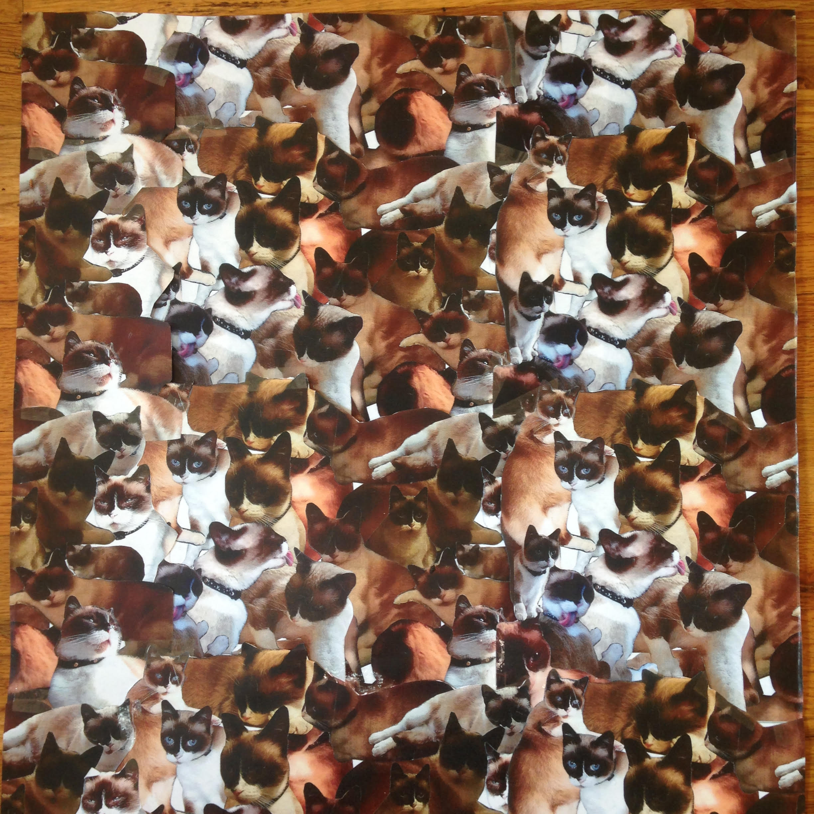

Projects

-
Bacon Binary
This simple website illustrates Lord Francis Bacon's binary cipher. The cipher, created in the
Elizabethan era, is considered the predecessor of modern computer binary code, and is an early
example of steganography.
The code for encryption and decryption functions on this site is written in Python.
The site also uses Flask, Jinja2, and WTForms.
-
Rosalind Challenges
These are solutions to some of the challenges on the Rosalind bioinformatics website. The challenges themselves,
as well as the datasets required to solve them, can be found on the
Rosalind website. These solutions are written in Python.
-
Therapy Markov
This program creates bogus therapist statements using Markov chains (a predictive algorithm), with actual
therapist statements as input data. This program was written in Python.
About Me

Background and Hobbies
Alma Frankenstein has a Bachelor of Science in social work and a Master of Science in systems Science
from Portland State University. She has spent the pandemic learning to program, reading, worrying,
walking, and biking. In normal times she enjoys those same hobbies. Her favorite way to spend
a Saturday is to drink too much coffee with a friend, then walk around for hours, talking about
philosophy and looking for friendly cats to pet.
Alma is from Chicago. She is very grateful to everyone who pitched in to save
the Museum of Holography there.
Jobs Left Off Resume
- Beekeeper
- Artists Model
- Hotel Chambermaid
- Docent at Surgical Science Museum